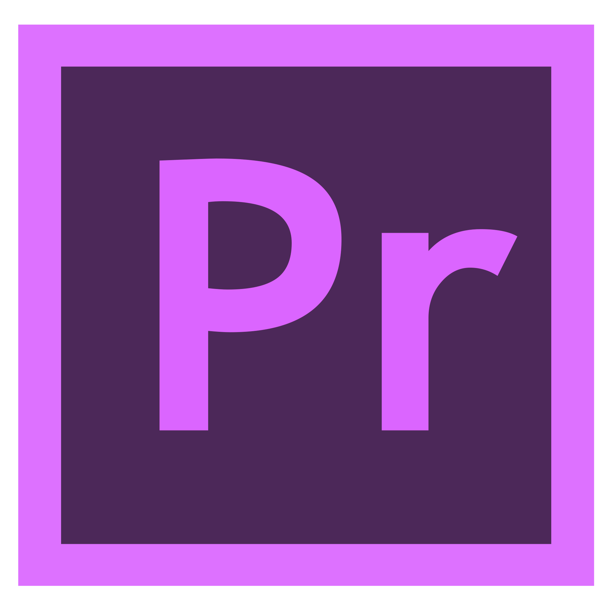

My academic and professional interests focus on technology, game development, digital design, and other forms of digital media. I enjoy learning how technology can be used to create interactive experiences and digital content.
Coding is one of my main academic interests. I am interested in learning programming languages and using code to create websites, games, and interactive projects. I have very basic experience with HTML, JavaScript, and Lua, and I am continuing to develop my programming skills through my coursework.
Video games are another major interest of mine. I enjoy playing games as well as learning about how they are designed and developed. My interest in game development has led me to study game design and explore areas such as programming, 3D modeling, and interactive media.

I am interested in graphic design and digital artwork. I enjoy creating and editing images and exploring different ways to communicate ideas through visual design. I have experience using programs such as Photoshop and Premiere Pro.

I also enjoy working with different digital tools and technologies. My interests include 3D modeling, digital art, video editing, computer building, and creating digital projects. These activities allow me to combine my technical and creative interests outside of an academic environment.